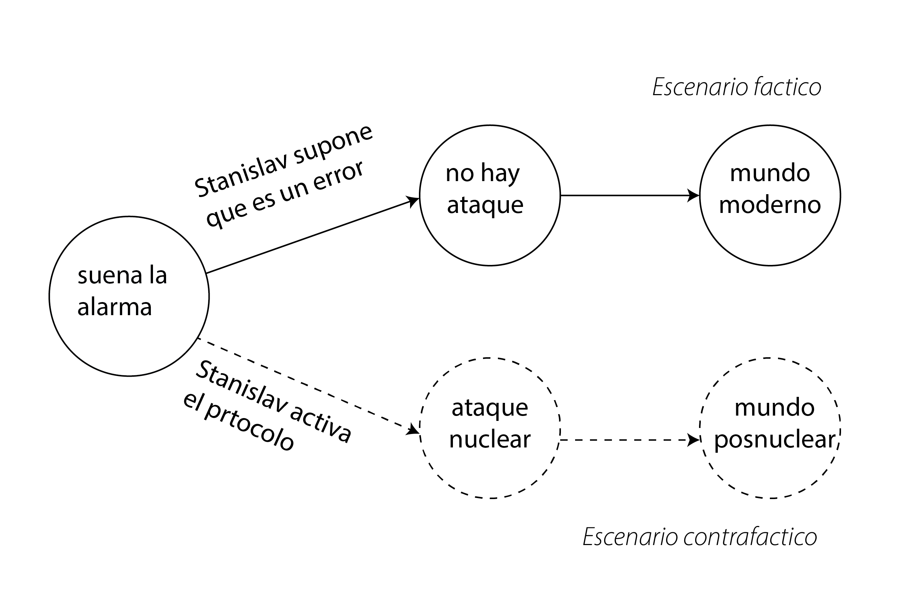
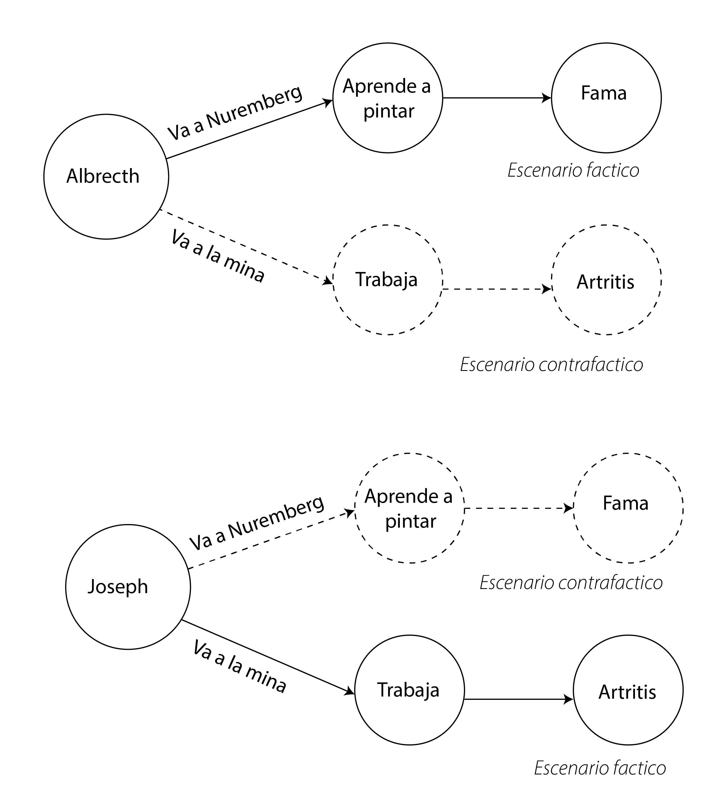

3 Potential outcomes
3.1 Guerra fría, manos y contrafácticos.
Son las 3 de la mañana del 26 de septiembre de 1983. Con una taza de café en mano, Stanislav Petrov vigila las alarmas de una estación de monitoreo de ataques nucleares a las afueras de Moscú. De pronto, los paneles se iluminan con un rojo furioso: tres misiles intercontinentales están en camino a la cúpula del Kremlin… o, quizás, el sistema tiene un error y se trata de una falsa alarma.
Stanislav no duda. Sigue el protocolo y llama al Kremlin. En menos de tres minutos, Rusia lanza un ataque nuclear contra las principales ciudades de EE. UU. La contrarespuesta estadounidense borra Leningrado y Stalingrado unos 40 minutos después. Además de millones de muertos, los ataques levantan tal cantidad de polvo en la atmósfera que el mundo se sume en un invierno nuclear durante 30 años, provocando hambruna en gran parte del hemisferio norte. Menos afectada por los ataques, la economía africana mejora lentamente y se convierte en el principal proveedor de alimentos del mundo. Para 2025, el Imperio Panafricano es la principal potencia económica global.
Todos sabemos que esto nunca ocurrió. Lo que realmente pasó fue que Stanislav Petrov pensó que se trataba de un error y nunca avisó a nadie (pueden ver la historia aquí).
Este mundo posnuclear es un mundo donde los hechos ocurrieron de manera completamente distinta: un mundo alternativo, un what if, un escenario contrafáctico. Podemos especular sobre lo que habría sucedido si los eventos se hubieran desarrollado de otra forma, pero la realidad es que nunca ocurrieron. Por lo tanto, un contrafáctico, aunque posible, es siempre especulativo.

En el marco de los potential outcomes de Rubin(Rubin 1974), un contrafactual es el resultado que habría ocurrido para una unidad (por ejemplo, una persona, un paciente, un sujeto experimental) si hubiera recibido un tratamiento diferente del que realmente recibió. Este concepto es fundamental para entender los efectos causales. Nos permite definir lo que entendemos por causa: la diferencia entre lo que realmente sucedió y lo que habría sucedido en un escenario alternativo.
En pocas palabras:
Para alguien que recibió el tratamiento, el contrafactual es lo que habría sucedido si no hubiera recibido el tratamiento. Por ejemplo, si un paciente recibió un nuevo medicamento y se recuperó, el resultado contrafactual es su estado de salud si no hubiera recibido el medicamento. Esto nos ayuda a aislar el efecto del medicamento.
Para alguien que no recibió el tratamiento, el contrafactual es lo que habría sucedido si hubiera recibido el tratamiento. Por ejemplo, si un estudiante no asistió a un programa de tutoría y reprobó un examen, el contrafactual es su calificación hipotética si hubiera asistido al programa.
Dado que cada unidad recibe solo un tratamiento, solo podemos observar un resultado (el resultado real). El resultado contrafactual es, por definición, inobservable. Esto se conoce a menudo como el problema fundamental de la inferencia causal. Debido a que no podemos observar simultáneamente ambos resultados potenciales para el mismo individuo, vamos a usar métodos y suposiciones estadísticas para estimar los efectos promedio del tratamiento en grupos de individuos. Más de esto en los próximos capítulos.
¿Para qué sirve entonces construir contrafácticos, imaginar cosas que no ocurrieron y que nunca ocurrirán? Veamos otra historia.
Este cuadro se llama Praying Hands y fue pintado por Albrecht Durero. Es una de las obras más importantes de su siglo.
Los Durero eran una familia de mineros pobres del sur de Alemania. Dos de sus hijos, Albrecht y Joseph, tenían talento para el dibujo y decidieron hacer un pacto: uno estudiaría en Núremberg durante cuatro años mientras el otro trabajaría en las minas para pagar su educación. Decidiria quien con una moneda. Pasado ese tiempo, intercambiarían lugares.
El azar favoreció a Albrecht. Durante esos cuatro años, se convirtió en un pintor famoso y regresó a casa para cumplir su parte del acuerdo. Sin embargo, al llegar, Joseph lo recibió con una triste noticia: era demasiado tarde. El arduo trabajo en la mina le había provocado una artritis severa, impidiéndole sostener un pincel. Como único tributo a su sacrificio, Albrecht decidió pintar sus manos.
Ahora tenemos dos escenarios contrafacticos, lo que le hubiera sucedido a Albretch si se quedaba en la mina, y lo que le hubiera sucedido a Joseph si se iba a estudiar a Nuremberg. De modo que el escenario seria asi.

Ambos son hermanos, comparten cierto talento y muchas cosas. Uno podria suponer que el destino de Joseph podria servir para suponer con mayor precision lo que le paso “le hubiera pasado a Albretch de no ir a Nuremberg” (escenario contrafactico) y el destino de Albetch “lo que le hubiera pasado a Joseph si hubiera podido ir a Nuremberg” (escenario contrafactico). Entonces imaginar escenarios contrafacticos nos permiten estimar el efecto de ir a Nuremberg o de quedarse. Para eso creamos los contrafacticos.
Ahora bien, es Joseph lo mismo que Albrecth, si la moneda hubiera favorecido a Joseph, habria un Durero pintor famoso? Bueno no estamos seguros de eso, lo que si podemos estar seguros es que pese a parecidos no son exactamente el mismo y quizas hay diferencias en talentos o en suceptibilidad a la artritis lo que hace que el destino de uno funcione como un simil o proxy de su destino contrafactico pero no el destino en si mismo. Con estas ideas podemos armar un marco teorico donde esos efectos se puedan estimar. Este marco teorico se llama outcomes potenciales.
Supongamos que quiero evaluar la efectividad de la aspirina para mitigar el dolor de cabeza. Me duele la cabeza y lo quiero es saber el efecto diferencial entre tomar y no tomar esa aspirina. Es decir, en el tiempo 0 estoy yo con dolor de cabeza y en el tiempo 1 debería haber dos versiones mías (como si una no fuera suficiente), la que tomó la aspirina y la que no. A cada una de ellas les tendría que preguntar cuánto les duele la cabeza, el outcome de mi comparación. No hace falta ser demasiado astuto para darse cuenta que esto es imposible ya que sólo nos será posible obsevar una de esas versiones mientras que la otra será un contrafáctico.
De esto vamos a hablar en este capítulo, utilizando la tradición de los potential outcomes. Estas ideas terminan de tomar forma en la versión que conocemos en las ciencias sociales en (Rubin 1974).
3.2 Potential outcomes
Lo que nos proponen los potential outcomes es la definición del efecto causal como la comparación de dos estados en el mundo. En una versión del mundo, la “actual”, me tomo una aspirina y a las dos horas registro la severidad de mi dolor de cabeza mientras que en la otra versión del mundo, la “contrafactual”, no me la tomo y las dos horas registro la severidad del dolor. A partir de esto, la tradición de los potential outcomes define al efecto causal de tomar una aspirina en el dolor de cabeza como la diferencia entre esas dos mediciones.
Todo muy lindo, pero como ya estarán sospechando es imposible calcular un efecto que está expresado en función de un contrafactual, ya que este contrafactual no lo podemos observar. Pero no se preocupen que le vamos a encontrar la vuelta.
Empecemos con un poco de notación que nos va a ayudar a acomodar las ideas. Por simplicidad vamos a asumir una variable binaria para la asignación del grupo (por ejemplo, tratamiento y control). Esta variable vale \(1\) si la unidad i recibe el tratamiento y \(0\) si no. Cada unidad \(i\) va a tener dos potential outcomes: \(Y_i^1\) si la unidad recibió el tratamiento y \(Y_i^0\) si no. Esto significa que una unidad experimental en el mismo momento del tiempo va a recibir y no recibir el tratamiento, o sea, alguno de estos va a ser contrafactual1.
1 De ahí el nombre de potential, porque se trata de posibles estados del mundo. Un estado en el que la unidad \(i\) recibe el tratamiento y uno en el que no.
Los outcomes observables difieren de los potenciales. Mientras que los potenciales son variables aleatorias hipotéticas, los observables son variables aleatorias factuales y medibles. Hay una ecuación que nos permite definir el outcome observable (\(Y^i\)) en función de los potenciales, se llama la switching equation:
\[ Y_i = D_i Y_i^1 + (1-D_i) Y_i^0 \tag{3.1}\]
Donde \(D_i\) vale \(1\) si la unidad i recibió el tratamiento (entonces \(Y_i=Y_i^1\)) y \(0\) si no (entonces \(Y_i=Y_i^0\)). Vale la pena notar que \(Y_i\), el outcome observable, no tiene ningún supraíndice ya que no es más potencial.
Usando esta notación definimos el efecto causal del tratamiento para una unidad \(i\) como: \[ \delta_i = Y_i^1 - Y_i^0 \tag{3.2}\]
Donde queda claro que para estimar el efecto causal de acuerdo a la tradición de los potential outcomes debemos conocer dos estados del mundo a los que es imposible acceder simultáneamente. Y aqui yace el problema funcamental de la inferencia causal: Para calcular el efecto causal se requiere acceso a datos que siempre nos van a faltar (los contrafácticos)(Rubin 1974).
3.3 Efecto promedio del tratamiento
Al igual que los potential outcomes, el efecto para la unidad \(i\) (\(\delta_i\)) también es una variable aleatoria, y su esperanza es lo que vamos a llamar el efecto promedio del tratamiento (ATE2). El ATE va a ser la magnitud de interés en nuestros experimentos, el efecto promedio de mi tratamiento. El mismo se define de la siguiente forma:
2 Del inglés Average treatment effect.
\[ \begin{array} _ATE &=& E[\delta_i] \\ &=& E[Y_i^1 - Y_i^0] \\ &=& E[Y_i^1] - E[Y_i^0] \end{array} \tag{3.3}\]
Ahora vamos a definir el efecto promedio, pero para el grupo tratado (es decir, los participantes asignados al grupo tratamiento, con \(D_i=1\)):
\[ \begin{array} _ATT &=& E[\delta_i|D_i=1] \\ &=& E[Y_i^1 - Y_i^0|D_i=1] \\ &=& E[Y_i^1|D_i=1] - E[Y_i^0|D_i=1] \end{array} \tag{3.4}\]
Esta magnitud se llama ATT3 y se calcula de la misma forma que el ATE pero condicionando los \(\delta_i\) al valor de \(D_i\) igual a 1. De manera análoga definimos el efecto promedio pero para el grupo no tratado4(\(D_i=0\))
3 Del inglés Average treatment effect for the treated.
4 Del inglés Average treatment effect for the untreated.
\[ \begin{array} _ATU &=& E[\delta_i|D_i=0] \\ &=& E[Y_i^1 - Y_i^0|D_i=0] \\ &=& E[Y_i^1|D_i=0] - E[Y_i^0|D_i=0] \end{array} \tag{3.5}\]
Ojo con confundir estos tres conceptos. Creo que el ATE es autoexplicativo, pero se suele confundir ATT y ATU. En el primer caso, estamos calculando la esperanza de los \(\delta_i\) para los individuos pertenecientes al grupo tratamiento. Esto involucra tanto sus \(Y^1_i\) como sus \(Y^0_i\). Es una confusión común confundir estos efectos promedios con magnitudes no potenciales pero, como se observa de sus fórmulas, tanto estos últimos dos como el ATE no se pueden calcular en la práctica. En las secciones siguientes vamos a ver como, cumpliendo ciertas condiciones5, podemos estimar el ATE a partir de los outcomes observables.
5 Spoiler: Asignación aleatoria de las unidades experimentales a los grupos.
3.4 Diferencia de medias simple
¿Qué es lo que sí podemos observar? Una magnitud que a priori podríamos creer que va aestar relacionada con el ATE y que podemos observar es la diferencia de medias entre los outcomes observados del grupo tratamiento y el grupo control. La vamos a llamar SDO6 y se calcula de la siguiente forma:
6 Del inglés simple difference in outcomes.
\[ \begin{array} _SDO &=& E[Y_i^1|D_i=1] - E[Y_i^0|D_i=0] \\ &=& \frac{1}{N_T} \sum_{i=1}^{N_T} (y_i|d_i=1) - \frac{1}{N_C} \sum_{i=1}^{N_C} (y_i|d_i=0) \end{array} \tag{3.6}\]
Donde \(N_T\) y \(N_C\) son la cantidad de individuos en el grupo tratamiento y control respectivamente (y \(N_T + N_C = n\)). Todo muy lindo, pero operemos un poquito para ver hasta que punto el SDO es un estimador insesgado del ATE. Empecemos escribiendo el ATE como una suma pesada del ATT y el ATU:
\[ \begin{array} _ATE &=& \pi ATT + (1-\pi) ATU \\ &=& \pi E[Y_i^1|D_i=1] - \pi E[Y_i^0|D_i=1] + \\ & & (1-\pi) E[Y_i^1|D_i=0] - (1-\pi) E[Y_i^0|D_i=0] \\ &=& \bigl\{ \pi E[Y_i^1|D_i=1] + (1-\pi) E[Y_i^1|D_i=0] \bigl\} - \\ & & \bigl\{ \pi E[Y_i^0|D_i=1] + (1-\pi) E[Y_i^0|D_i=0] \bigl\} \end{array} \tag{3.7}\]
Con \(\pi = N_T/n\) y \(1 - \pi = N_C/n\).
Operando con la Ecuación 3.8 podemos despejar la diferencia entre los outcomes observables (SDO) y ver cómo esta se realciona con el resto de las magnitudes definidas7.
7 Pueden ver el despeje numérico en detalle en el capítulo 4 de (Cunningham 2021).
\[ \begin{array} _E[Y_i^1|D_i=1] - E[Y_i^0|D_i=0] &=& ATE \\ &+& ( E[Y_i^0|D_i=1] - E[Y_i^0|D_i=0] ) \\ &+& (1-\pi) (ATT - ATU) \end{array} \tag{3.8}\]
Que podemos reescribir como:
\[ \begin{array} _\underbrace{\frac{1}{N_T} \sum_{i=1}^{N_T} (y_i|d_i=1) - \frac{1}{N_C} \sum_{i=1}^{N_C} (y_i|d_i=0)}_\text{Diferencia de los outcomes} &=& \underbrace{ATE}_\text{Efecto promedio del tratamiento} \\ &+& \underbrace{( E[Y_i^0|D_i=1] - E[Y_i^0|D_i=0] )}_\text{Sesgo de selección} \\ &+& \underbrace{(1-\pi) (ATT - ATU)}_\text{Sesgo de efecto heterogéneo} \end{array} \tag{3.9}\]
Lo que puede verse en Ecuación 3.9 es que si pudiéramos asegurar de alguna forma que los sesgos de selección y de efecto heterogéneo fueran cero, el SDO sería un buen estimador del ATE que es, al fin y al cabo, el efecto causal promedio que nos interesa en nuestro experimento.
3.5 Independencia
La definición de independencia en el contexto de los potential outcomes es la siguiente:
\[ (Y^0, Y^1) \perp D \] Momento cerebrito, pensemos una poco qué quiere decir. Esto significa que la asignación de los participantes al grupo control o tratamiento (\(D\)) no depende de los outcomes potenciales de ese individuo.
Vamos a pensarlo con un ejemplo concreto. Imaginen que tenemos una grupo de participantes para poner a prueba una cirugía experimental como altenativa a un tratamiento médico establecido no quirúrgico. Si la asingación de individuos al grupo tratamiento la hace un médico en base a lo que cree que va a ser conveniente para él, por ejemplo, no asignando a pacientes de edad avanzada al grupo tratamiento por el riesgo asociado a una cirugía, o asignando a pacientes cuyo pronóstico con el método tradicional vea poco favorable al grupo control. En este caso, la asignación a un grupo sí depende de los posibles resultados, por lo tanto, no hay independencia. Si en lugar de eso tiráramos una moneda antes de recibir a cada paciente, podríamos de esa forma asegurar la independencia.
La independencia implica que se cumpla:
\[ \begin{array} _E[Y^1|D=1] - E[Y^1|D=0] &=& 0 \\ E[Y^0|D=1] - E[Y^0|D=0] &=& 0 \end{array} \tag{3.10}\]
Es decir, que la esperanza de los outcomes para los participantes que fueron asignados al grupo tratamiento como al grupo control serían iguales si pudieramos medirlos a ambos en “mundo tratamiento”8. Y lo mismo pasaría si pudiéramos medirlos a ambos grupos en el “mundo control”[^indep]. Ojo que esto no implica que la esperanza del outcome para tratamiento en los tratados sea igual a la esperanza para no tratamiento en los controles (\(E[Y^1|D=1] - E[Y^0|D=0] = 0\)) ni igual a la esperanza no tratamiento de los tratados (\(E[Y^1|D=1] - E[Y^0|D=1] = 0\)).
8 Tengamos en cuenta que \(E[Y^1|D=0]\) es un contrafáctico, ya que es el outcome habiendo sido expuesto al tratamiento pero de los individuos en el grupo control (de ahí la condicionalidad con \(D=0\))
¿Qué implicancias tiene las igualdades presentadas en Ecuación 3.10 en los sesgos que vimos en la ecuación Ecuación 3.8? Empecemos por el sesgo de selección (\(E[Y^0|D=1] + E[Y^0|D=0]\)). Vemos que, deacuerdo a la primera línea de Ecuación 3.10 ya nos dice que, de ser independiente la asignación del grupo experimental, este sesgo sería cero. Pensemos un poco. Lo que nos está diciendo la condición de independencia es que si ambos grupos fueran no tratados, ambos tendrían el mismo outcome lo que pareciera indicarnos que es razonable considerar nulo al sesgo de selección.
La relación del sesgo de efecto heterogéneo (\((1-\pi) (ATT - ATU)\)) con la independencia es un poquito más difícil de demostrar. Olvidémonos del \((1-\pi)\) de momento. Reescribamos los efectos ATT y ATU:
\[ \begin{array} _ATT &=& E[Y^1|D=1] - E[Y^0|D=1] \\ ATU &=& E[Y^1|D=0] - E[Y^0|D=0] \end{array} \]
Y ahora restemos ambos términos:
\[ \begin{array} _ATT - ATU &=& E[Y^1|D=1] - E[Y^0|D=1] - ( E[Y^1|D=0] - E[Y^0|D=0] )\\ &=& \bigl\{ E[Y^1|D=1] - E[Y^1|D=0] \bigl\} + \bigl\{ E[Y^0|D=0] - E[Y^0|D=1] \bigl\} \end{array} \tag{3.11}\]
Reescrito de esta forma podemos ver los dos primero términos de Ecuación 3.11 se hacen cero por la rpimero línea de Ecuación 3.10, y los últimos dos se hacen cero por la segunda.
Finalmente, demostramos que si hay independencia en la asignación de los grupos, la diferencia de las medias entre el grupo tratado y el control es un buen estimador del ATE.